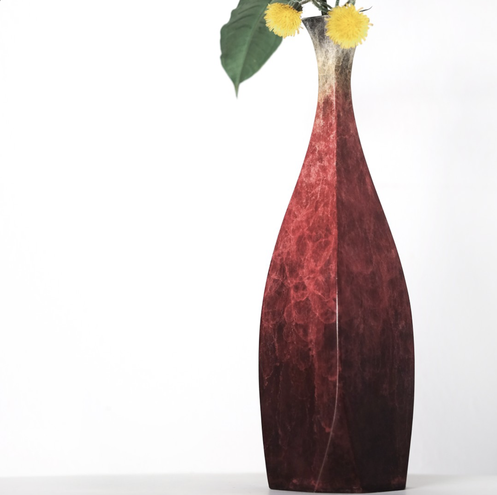
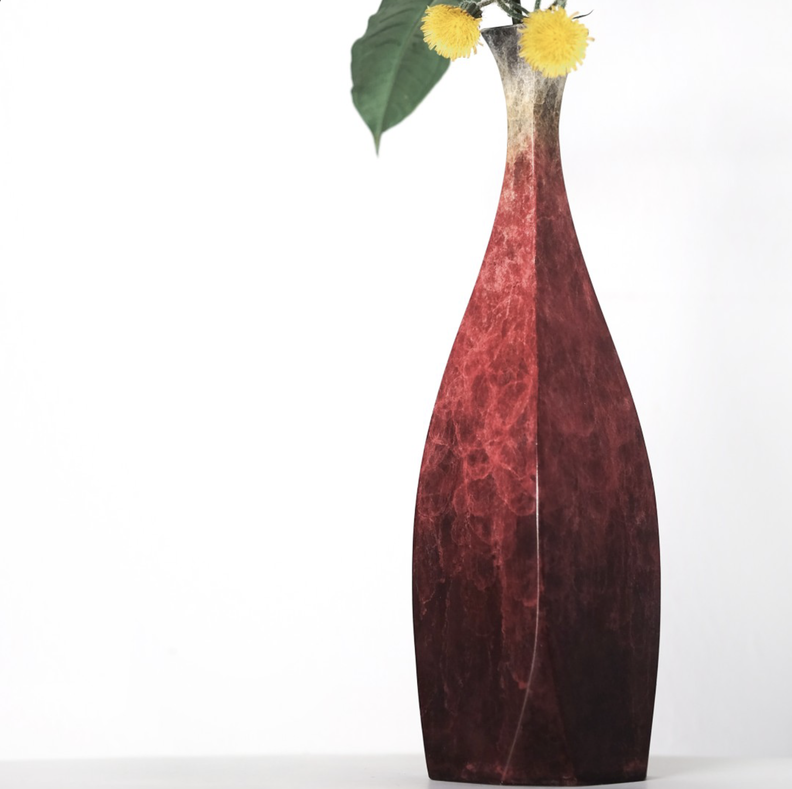

Generating your dream images from text

The main idea of DiffuseKronA is to use the Kronecker product, a matrix multiplication method that captures pairwise interactions between elements of two matrices, to decompose the weight matrices of the attention layers in the UNet model.
Kronecker Product is a matrix multiplication method that captures structured relationships and pairwise interactions between elements of two matrices, offering a higher-rank approximation with less parameter count and greater flexibility.
Kronecker Adapter replaces the low-rank decomposition in LoRA with the Kronecker product, such that \(W_{\text{pre-trained}}+\Delta W = W_{\text{pre-trained}} + (A \otimes B)\), where A and B are the Kronecker factors, and ⊗ denotes the Kronecker product.
Kronecker Adapter reduces the computational cost by using the following equivalent matrix-vector multiplication: \( (A \otimes B) x=\gamma\left(B \eta_{b_2 \times a_2}(x) A^{\top}\right)\), where vec is the vectorization operator, and T is the transpose operator.
$$W_{\text{fine-tuned}}=W_{\text{pre-trained}}+\Delta W$$
$$\Delta W^{U} =A^U \otimes \mathbf{B}^U$$
$$ A \otimes B=\left[\begin{array}{ccc}
a_{1,1} B & \cdots & a_{1,a_2} B \\
\vdots & \ddots & \vdots \\
a_{a_1, 1} B & \cdots & a_{a_1, a_2} B
\end{array}\right]$$
Unraveling Textual Descriptions into Artistic Creations
 

A [V] Vase

Your caption goes here
For more results, please visit gallery!